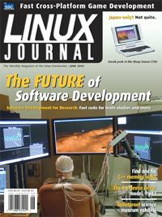

Shutdown Archive web server
Search:
Linux Journal
Issue #110/June 2003

Features
Game Programming with the SDL
by Bob Pendleton
With this well-tested library, you can easily develop games for Linux and non-Linux platforms.
Embedding an SQL Database with SQLite
by Michael Owens
You don't have to start doing DBA work just to run your SQL application on an embedded system or demo laptop. Simplify your life.
A Template-Based Approach to XML Parsing in C++
by John Dubchak
Add XML support to your project with the Apache Software Foundation's Xerces parser and some C++ code.
Speeding Up the Scientific Process
by Sam Clanton
Get rapid development and fast number crunching when you integrate critical functions in C into a Matlab project.
Indepth
Lighting Simulation with Radiance
by Anthony W. Kay
Turn simple data files into amazing 3-D scenes using free software.
Linux for Science Museums
by Len Kaplan
Love interactvie museums? Volunteer to help make your favorite museum even cooler.
Embedded
Driving Me Nuts The Driver Model Core, Part I
by Greg Kroah-Hartman
Memory Leak Detection in C++
by Cal Erickson
It's never too soon to fix bugs, and you can start using these tools as soon as your project will compile.
Toolbox
At the Forge
Customizing Plone
by Reuven M. Lerner
Paranoid Penguin
Using Firewall Builder, Part II
by Mick Bauer
Columns
Linux for Suits
: Click-N-Run: an Easier Future for Customers?
by Doc Searls
EOF
Re-energizing the Stunted PC Revolution
by Michael L. Robertson
Reviews
The Sharp Zaurus SL-C700
by Guylhem Aznar
SCO Linux 4
by Steve R. Hastings
C++ Templates: The Complete Guide
by Michael Baxter
Departments
Letters
upFRONT
From the Editor
On the Web
New Products
Archive Index
Shutdown Archive web server
Search:
Copyright © 1994 - 2018
Linux Journal
. All rights reserved.